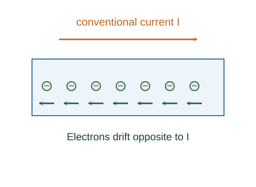

Derive current from carrier drift
Current counts how much net charge crosses a surface per unit time. A slow average drift of many carriers can produce a substantial current even though their random motion mostly cancels.
What the symbols mean
n: carrier number density (m⁻³); q: signed charge per carrier; A: cross-sectional area; 𝐯d: mean drift velocity; 𝐉: current density.
When this applies
Uniform steady flow of one carrier species. The scalar magnitude formula uses |q| and the positive drift-speed magnitude.
Developing the argument

Define current as charge rate
Choose a positive surface direction. Net charge transported through the section determines signed current.
Count crossing carriers
During dt, carriers drifting distance vd dt sweep a volume Avd dt. Multiply this by number density to obtain the number crossing.
Convert carrier count to charge
Each carrier contributes charge q. Dividing the transported charge by dt gives the current; the vector form includes carrier direction.
Account for negative carriers
For electrons q is negative. Their drift velocity points opposite conventional current, so the product q𝐯d points along the current density. Add separate nq𝐯d terms if multiple species conduct.
A worked example
For n = 8.5 × 10²⁸ m⁻³, A = 10⁻⁶ m² and current 1 A, electron drift-speed magnitude is about 7.3 × 10⁻⁵ m/s.
Derivation behind this calculation ↗A point to keep straight
Drift speed is not the speed of the electrical signal and is not the electrons’ much larger random microscopic speed.
Check the assumptions and derivation ↗